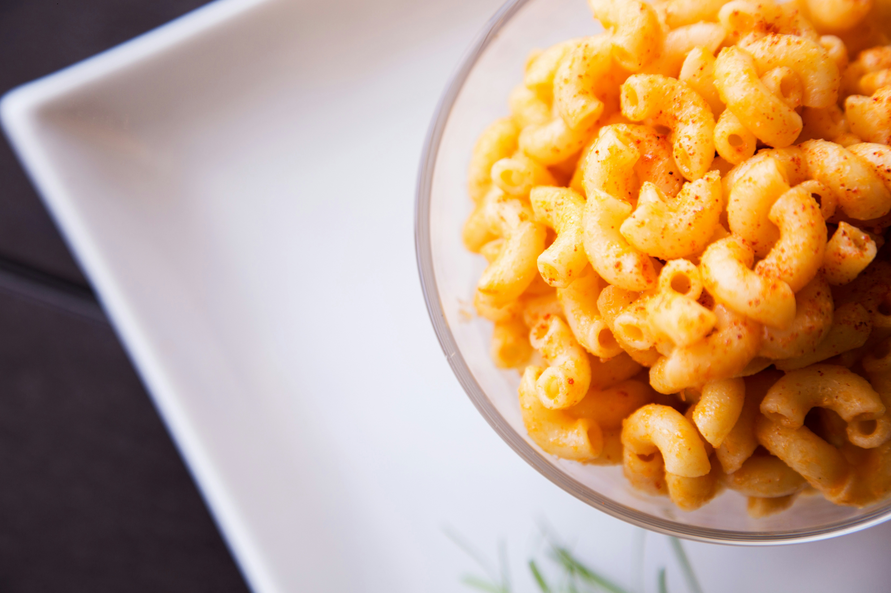

Wow, is there a dish more remeniscent of the American childhood than Macaroni and Cheese? This was one of our absolute favorites growing up, and any parent can tell you why: it is both delicious and easy.
Now that I have my own kid, I see why my mom made it so often. And ironically, as an adult, I have learned that you don't even need to use box. You, yes you, can make this delicious dish at home with just a little time and a few ingrediants.